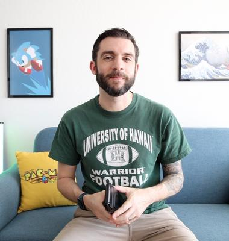
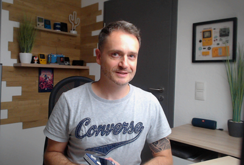

Ludo 2024
Ludo is an annual event held at the Esperanto-Stacio in Halbe (just outside Berlin) from 2021-2024. This is an extended videogame weekend where we play everything from modern to retro game systems. For example, we play VR together on the Meta Quest 3 and local multiplayer on the Xbox Series S. Enjoy a 2-player modern dance pad experience similar to Dance Dance Revolution. As for retro, we have systems from Pong to Nintendo GameCube. We also have a 4K projector on a 100" screen for an epic local multiplayer gaming experience that's hard to get anywhere else!
Games Played (Ludo 2024)
To get a feel of what kinds of games we tend to play, here's all the games we played last time!
Arkanoid Eternal Battle
Beat Saber (VR)
Blather Round (Jackbox Party Pack 7)
Brakes Are For Losers
Cake Bash
Dr Mario
Dr Mario 64
Eleven Table Tennis (VR)
F-Zero GX
Fibbage 4 (Jackbox Party Pack 9)
Keep Talking and Nobody Explodes (VR)
Mario Kart 64
Mario Kart Double Dash
Moving Out
Nintendo World Championships
Pong (Arcade)
Puyo Puyo Tetris 2
Runbow
SEGA Virtua Racing
Shipped
Split the Room (Jackbox Party Pack 5)
Stepmania
Super Mario All Stars (Super Mario Bros 3)
Super Mario Bros (Game & Watch)
Super Mario Bros (NES)
Super Mario Kart
TowerFall Ascension
Walkabout Minigolf (VR)
Worms W.M.D.
2024 Special Guest: Russ from Retro Game Corps
{kind=link}
Russ, also known as Retro Game Corps, is a prominent figure in the world of retro gaming and emulation. With a passion for classic and modern games, Russ has carved out a niche for himself on his YouTube channel, where he shares in-depth reviews, emulation setup guides, and fun new ways to play beloved titles. His content caters to both seasoned enthusiasts and newcomers, making it accessible and engaging for all. Russ’s expertise extends to various handheld gaming devices, and he’s always on the lookout for exciting developments in the gaming world.
Since he'll be flying in all the way from Hawaii, Ludo presents a unique opportunity to meet him in Europe, making it an unforgettable experience for gaming enthusiasts across the continent. Don’t miss out on the chance to learn from a true gaming aficionado!
2024 Special Guest: MashTec
{kind=link}
MashTec embarked on a journey into the world of retro gaming handhelds in late 2019 and early 2020. Starting with the RG350—a popular clone of the GCWzero—he delved into the rabbit hole of these nostalgic devices. His familiarity with Linux from work led him to share his findings on YouTube, creating the MashTec channel.
As the pioneer who introduced EmulationStation and RetroArch to these handhelds through his explanation videos, MashTec’s influence quickly spread. Manufacturers like Anbernic and Powkiddy adopted these tools for their upcoming devices. But for Manuel, it’s not just about software—it’s about pushing boundaries, reviewing devices, and sharing improvements with the community.